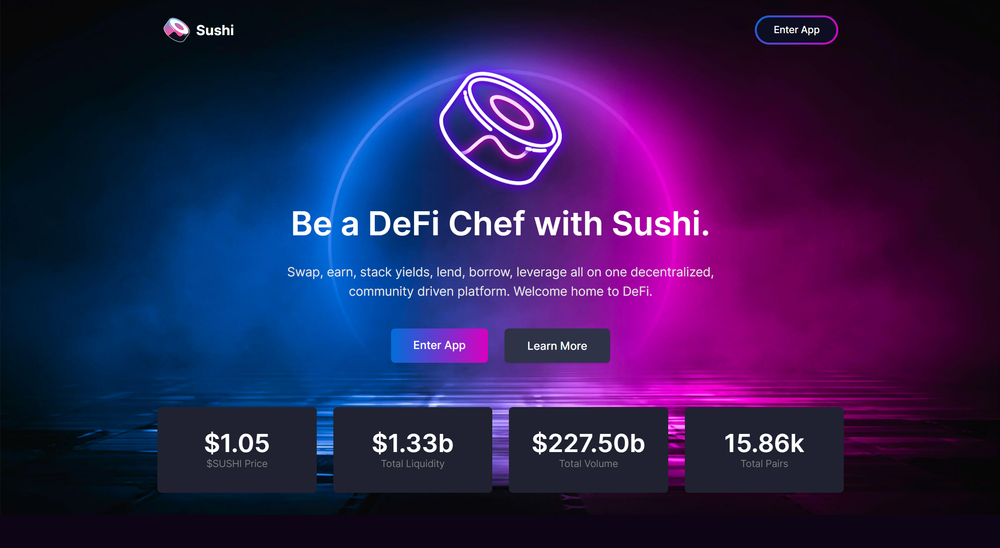

Sushiswap - Community Platform
Sushiswap : Sushiswap Introducing
Welcome to the Sushi monthly recap! 🗞
This post will outline some of the major operational, technical, and community milestones reached in the past month. We’ve summarized all articles and announcements as well as some of the exciting things to come — as laid out in the Sushi roadmap. Without further ado, let’s dive into the highlights:
With this focus on true multi-chain experiences, we here at Sushi took the path of a complete architecture overhaul with 2.0 that really starts to unlock the potential of the horizontal scaling we’ve done across many different chains. Excited by this chain agnostic future, today at Sushi we are announcing the release of the first phase of our Sushi 2.0 UI: swaps, earn, and analytics all with 15 chains in one place.
Multi-Chain First Applications
Over the last cycle, we saw the growth in demand for additional block space on EVM-based chains whether it be layer 1 or 2. With over $23 billion of $54 billion in TVL being deployed across various chains outside of Ethereum, the direction is clear for a multi-chain rich future and at Sushi we are solely focused on building truly chain agnostic applications.
SushiSwap was the first iteration on this multi-chain first approach, being the first ever cross-chain swap AMM and already showing good usage with swaps between: Ethereum, Arbitrum, Polygon, Optimism, Avalanche, Fantom, Binance Smart Chain.
With this focus on true multi-chain experiences, we here at Sushi took the path of a complete architecture overhaul with 2.0 that really starts to unlock the potential of the horizontal scaling we’ve done across many different chains.
Excited by this chain agnostic future, today at Sushi we are announcing the release of the first phase of our Sushi 2.0 UI: swaps, earn, and analytics all with 15 chains in one place.
Phase One
Sushiswap 2.0 in its first phase features a revamped look to improve the experience for our users with swaps, liquidity management, staking and analytics.
Sushiswap 2.0 supports: Ethereum, Arbitrum, Avalanche, MoonRiver, Gnosis, Fantom, Binance Smart Chain, Celo, Fuse, Arbitrum Nova, Optimism, Polygon, Metis, Boba and Kava.
All 15 chains can be accessed through each of these applications, and more will come in the second phase to make the experience even more seamless.